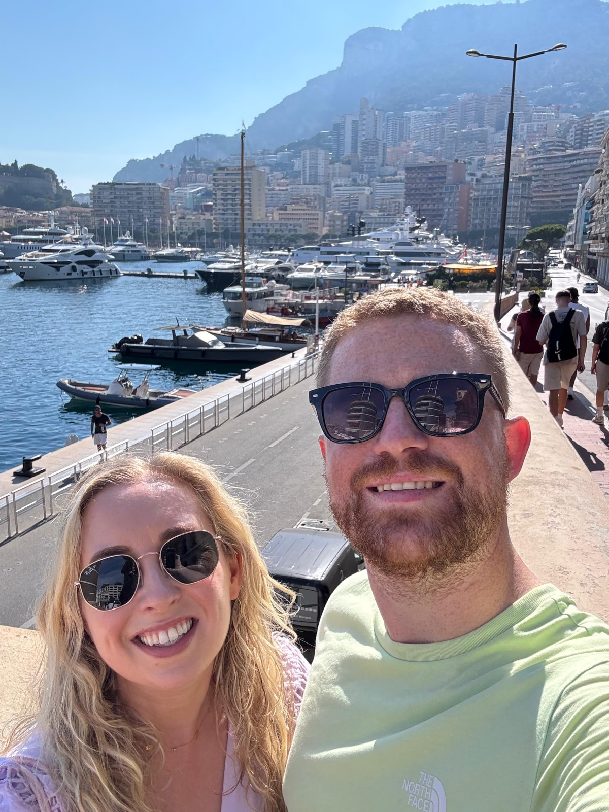
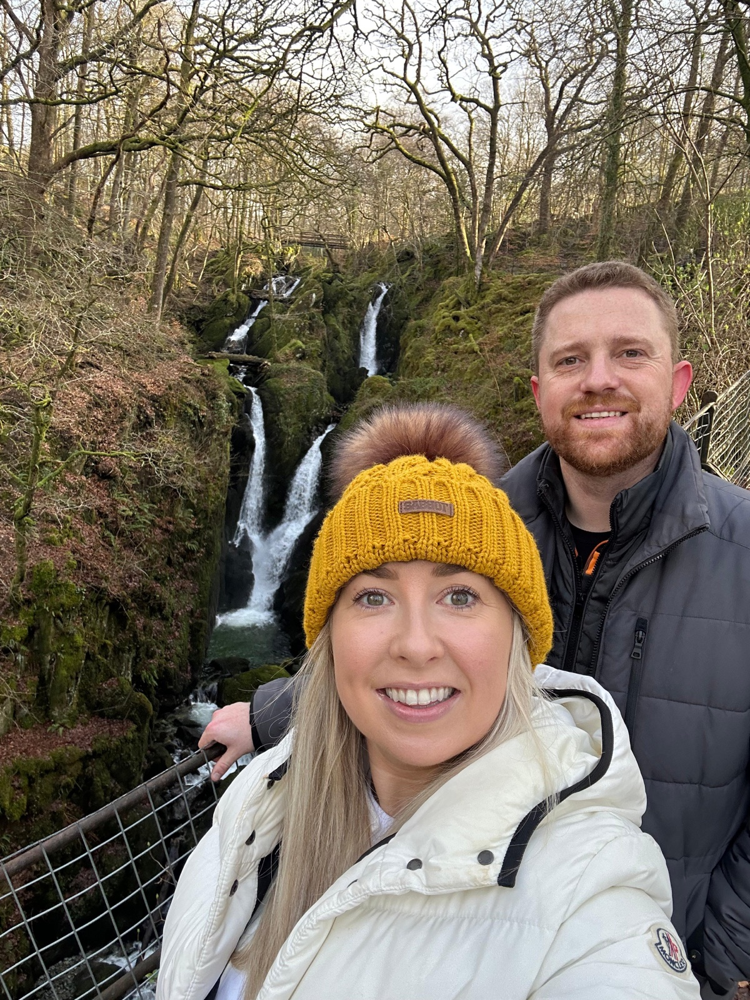

Getting There
Sheen Falls is situated just outside the town of Kenmare in Co. Kerry.
Both Cork Airport and Kerry Airport are good options if you are travelling from abroad, and car hire is available at both airports. Distances and travel times from the airports are estimated as
- Cork Airport, 1 hour 15 minutes (97.2 km)
- Kerry Airport, 54 minutes (58.5 km)
If you would like recommendations for travelling anywhere else in Kerry or Cork, please get in touch and we will happily point you in the right direction.

Accommodation
Accommodation is available at Sheen Falls Lodge for the wedding. Reservations can be made directly with the hotel by phone or email at reservations@sheenfallslodge.ie.
The wedding rates at Sheen Falls Lodge are as follows
- €290 per room for one night inclusive of Full Irish Breakfast
- €570 per room for two nights inclusive of Full Irish Breakfast
Supplements apply for any night other than the wedding, and where a higher category of room is selected.
Staying in Kenmare
There are many other accommodation options available in, or close to, the town of Kenmare. Alternative hotel options include
- House 15 Kenmare
- Brook Lane Hotel
- The Kenmare Bay Hotel
- Bridge Street Townhouse
For house rentals, we recommend using airbnb.com or booking.com.
If you are staying offsite for the wedding, we highly recommend arranging transport and taxis ahead of schedule, as Uber is not a viable option in Kenmare!